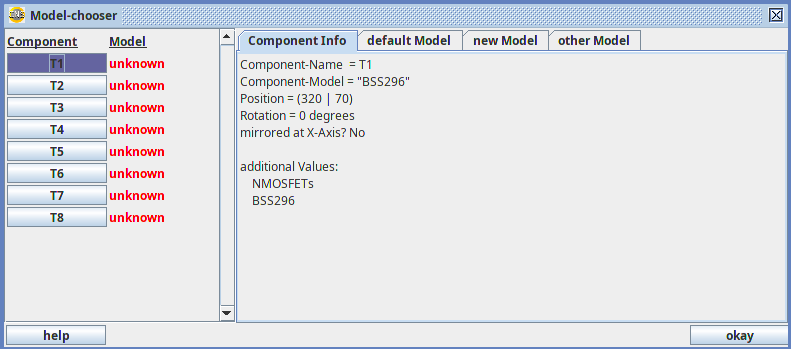
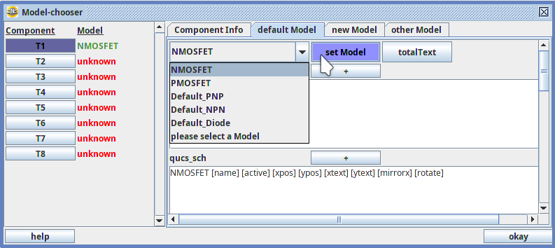

This Dialog appears when you open a schematic which contains components of models which are not specified libraries. It gives you the possibility to set your components' models. (Setting the models means specifying the connections of this component, specifying how the components are drawn, and specifying the electrical characteristic of the components in a ngspice-simulation.)
The Dialog typically looks like this:

The fastest and easiest way to set the model of T1 to a N-channel MOSFET is to set it to the default NMOSFET in the "Default-Model"-Tab. However, this of course does not set it to the type "BSS296", so using the default model may be a good idea sometimes, if you want some results fast, and don't know which model to use for T1 anyway.

But in many cases, you might want to specify a model that matches to the real behaviour of a BSS296-tranistor better than some default model:
You can create a new model and set this new model to your component. This option is suited for practical engineering, if the user knows the specifications of the components and knows how to create an ".alib"-library
You can save that model in the libraries folder, if you want to use it again.
However, it might be faster and easier to open the libraries folder and write an alib-file with a text editor.
If you have the alib-file of your desired model (in the example above, the model for "BSS296") somewhere else than in the libraries folder, then you can open that file in the "other Model"-tab and set the model in that tab
Q: What happens, when I modify the textfields for a component?
A: A model for a component will always be set based on the texts that are in the textfields describing that model.
That means that you can modify the textfields on purpose, for example to set some parameters, or to make it look different.
When you push the "set-Model"-Button, then a Model will be created based on these texts.
But changing the textfields does not change the library text, since the library document will not be overwritten.
So if you changed the text without purpose, then you may simply reload the normal library text by selecting that model again.
In this case, all modifications are reverted.
Q: How can I save my modifications then?
A: You can get the total text from the "totalText"-Button and copy it into a text-File with the file-ending ".alib"
This ".alib" file must be placed in a way, so that AniCAD finds it
(TODO: Documentation how to do that)
(TODO: make such a total-Text-Button)
Q: What is this okay button for? Can't I set all models and then close this window?
A: Yes in fact, this is also a completely correct way to do. But some users prefer to work via ok-button, and not just closing a Window, as soon as they are done setting all components' models.
----------------